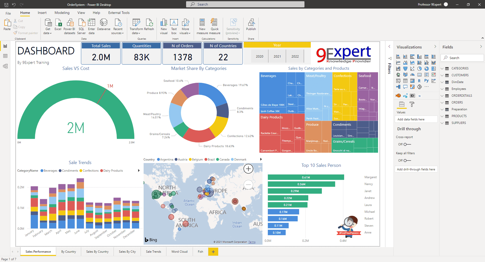

Data cleaning is a crucial step in any data analysis or data science project. It involves identifying and correcting (or removing) inaccurate records, handling missing values, and ensuring data consistency and accuracy. In this project, the focus was on cleaning a housing dataset using MySQL Server, a relational database management system that provides robust tools for data manipulation and management.
.


Data exploration is a critical first step in understanding any dataset. It involves examining the data's structure, distributions, patterns, anomalies, and relationships between variables. When exploring a layoffs dataset, we aim to understand the factors contributing to layoffs, the demographics affected, and any trends over time. This exploration can inform subsequent analyses and decisions.

Data visualization is a powerful tool for uncovering patterns, trends, and insights in data, and Tableau is one of the leading platforms for creating interactive and comprehensive visualizations. In this project, we focus on visualizing an Airbnb dataset to gain insights into various aspects of the short-term rental market, such as pricing, property types, availability, and geographic distribution.

In this project, data was collected and analyzed to understand salary trends in the field of data science. Visualizations were created to highlight which job roles offer the highest salaries, varying by location. The analysis provides insights into geographical differences in pay, helping to identify regions with the most lucrative opportunities for data professionals. This information is valuable for job seekers and employers alike, as it sheds light on the financial landscape of the industry.

The objective of this project is to develop a predictive model that forecasts a student’s final grade based on factors such as study habits, family background, and demographic details. This model aims to provide educational institutions with valuable insights into the key predictors of academic success. By accurately identifying students at risk of underperforming, institutions can implement targeted support strategies to improve student outcomes, such as personalized tutoring, counseling, and family outreach programs.
>View Project

In this project, I created two Python applications: a BMI calculator and a file sorter. The BMI calculator allows users to input their height and weight to determine their Body Mass Index, providing a quick way to assess their health status. The file sorter organizes files within a directory based on specified criteria, such as file type or date, improving file management and accessibility. Both applications showcase practical uses of Python for automating routine tasks and handling user inputs efficiently.